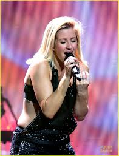
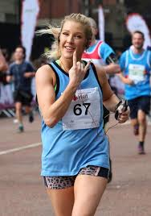

Ellie е родена Декември 30, 1986 во Lyonshall, мало гратче во близината на Kington, Herefordshire.
 Таа го посетуваше училиштето на Лејди Хокинс во Кингтон, каде што освои главен дел во училишна продукција, Волшебникот од Оз, како страшило.
 Нејзиното најбрзо време на полумаратон е еден час и 40 минути.
Таа, исто така, свири на тапани и гитара, и таа е високо остварен кларинетист. Таа научила да свири кларинет како млада и првично се научила да свири гитара за да импресионира момче.
Ели Гулдинг брзо се искачи на слава, прво во Англија, а неодамна и во САД. Хитови:Love me like you do, Burn, Goodness Gracious, Army, Beating Heart.
| Датум на раѓање |
|---|
| Ellie е родена Декември 30, 1986 во Lyonshall, мало гратче во близината на Kington, Herefordshire. |
| Кариера |
| SТаа го посетуваше училиштето на Лејди Хокинс во Кингтон, каде што освои главен дел во училишна продукција, Волшебникот од Оз, како страшило. |
| Маратонско трчање |
| Нејзиното најбрзо време на полумаратон е еден час и 40 минути. |
| Повеќе од пејачка |
| Таа, исто така, свири на тапани и гитара, и таа е високо остварен кларинетист. Таа научила да свири кларинет како млада и првично се научила да свири гитара за да импресионира момче. |
| Хитови |
| Ели Гулдинг брзо се искачи на слава, прво во Англија, а неодамна и во САД. Хитови:Love me like you do, Burn, Goodness Gracious, Army, Beating Heart. |
Елена Џејн Гулдинг е родена на 30 декември 1986 година во Херефорд и израсната во Лионшал, мало село во близина на Кингтон, Херефордшир, второ од четирите деца (таа има брат и две сестри). Нејзиниот татко, Артур Гулдинг, потекнувал од семејство на гробари, додека нејзината мајка Трејси (моминско Кларк), работела во супермаркет. Кога имала 5 години, нејзините родители се разделиле; подоцна имала очув кој бил возач на камион, кого го сметала за „ужасен“. На 9 години почнала да свири кларинет, а на 14 почнала да учи гитара. Таа присуствуваше на средното училиште на Лејди Хокинс во Кингтон каде ја освои улогата на Плашилото во училишната продукција на Волшебникот од Оз. На 15 години, таа започна да пишува песни и додека беше на колеџот Херефорд Sixth Form, се пријави на натпревар за пеење и победи. Откако започна со курсеви за драма, политика и англиски јазик на Универзитетот во Кент, каде што беше изложена на електронска музика, таа беше забележана од Џејми Лиливајт од Turn First Artists на натпревар за таленти на универзитетот. Откако таа успешно се прикажа за шефицата на „Прв пат“, Сара Стеннет, и беше кажано да го напушти универзитетот и беше сместена во куќа во западен Лондон. Лиливајт стана нејзин менаџер и ја запозна со продуцентот Старсмит кој ќе стане нејзин главен соработник и главен продуцент на Lights.
| Lights - Деби албум |
|---|
| Деби албумот на Гулдинг Lights беше издаден во март 2010 година, достигнувајќи го првото место на топ-листата за албуми во Обединетото кралство и шестото место на ирската табела за албуми. До јуни 2012 година, албумот беше продаден во над 850.000 копии во ОК и 1,6 милиони копии ширум светот. |
| Уметнички влијанија |
| Гулдинг го поседува гласовниот опсег на сопран со лесна лирска сопран што опфаќа 3,5 октави и е забележана по нејзиниот висок пирсинг вибрато, здив тон и емотивна испорака. |
| Личен живот |
| Гулдинг е близок пријател со американската фолк пејачка Лиси. Двајцата заедно беа на турнеја низ Обединетото Кралство во 2010 година. Таа, исто така, следи веганска исхрана. |
| Love Me Like You Do |
| Ели Гоулдинг ја сними „Love Me Like You Do“ за филмот базиран на роман „50 нијанси сиво“. Официјалното видео има повеќе од 900 милиони прегледи на YouTube. |